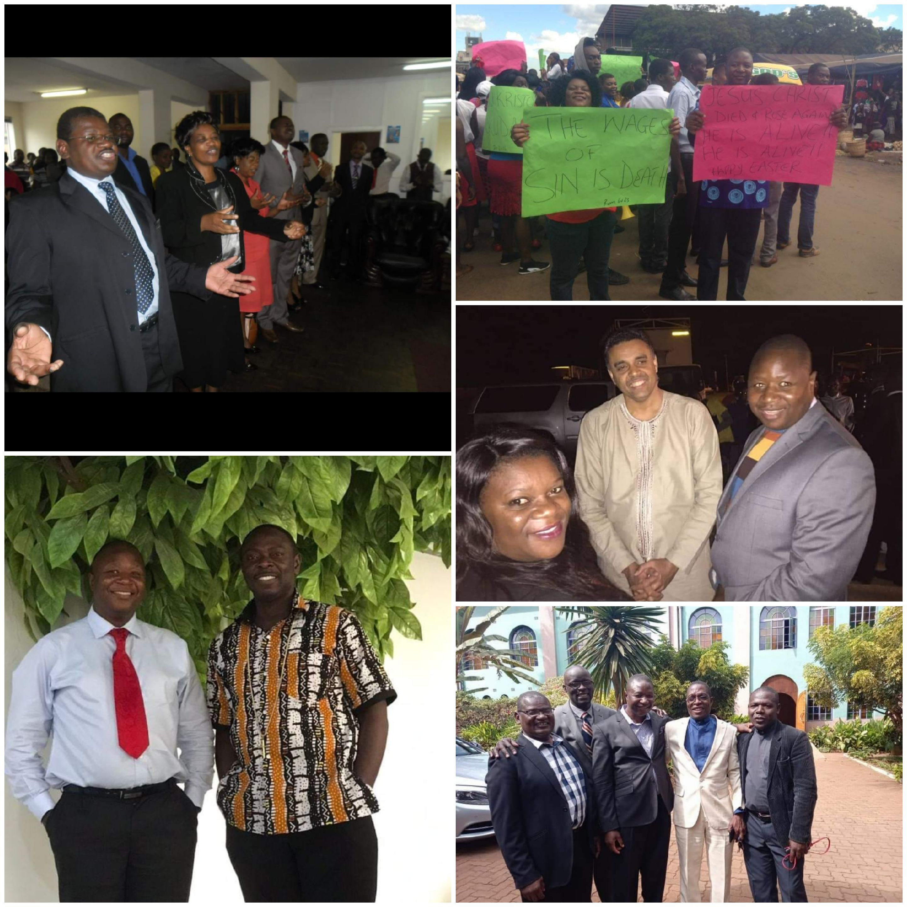
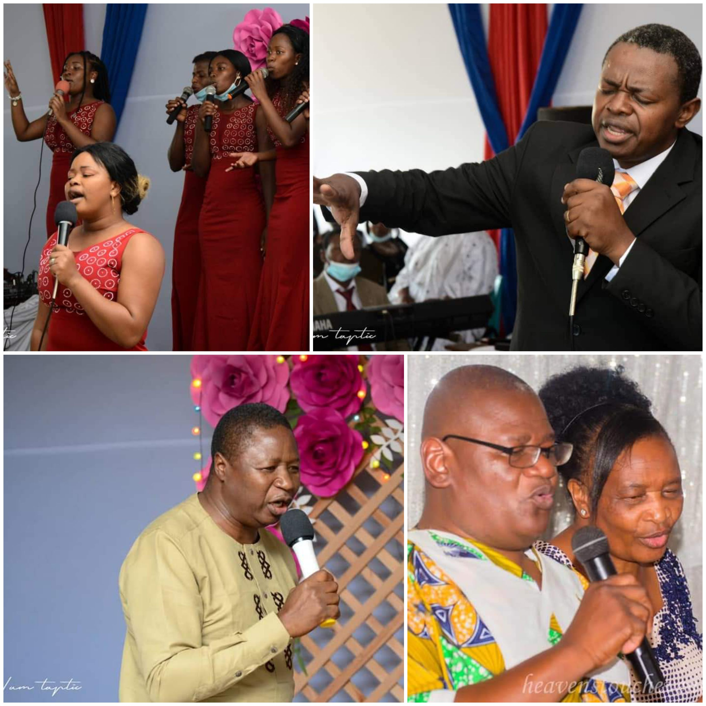

Redemption Faith Ministries International (RFMI) was birthed by Reverend Maxwell Cedric through divine calling.He who answered the call of God in the year 2001 with Luke 14 vs 23 "..GO into the highways and hedges, and compel them to come in..".RFMI is a pentacostal ministry which has grown into with 5 assemblies that is Budiriro 4 with Pastors Fushai, Budiriro 5 with Apostles Matemba, City with our Bishop Cedric, Chitungwiza with Pastors Muzembi and Tafara with Pastors Hama.Our ministry strongly believes in